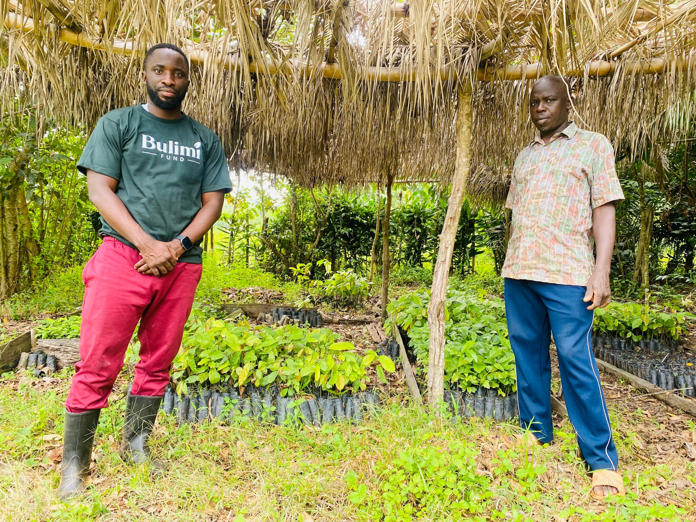
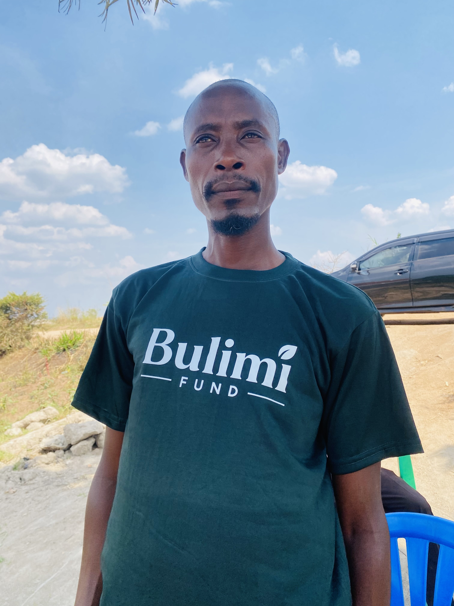

Bulimi brings together the services farming families need to succeed — from registration to the sale of quality dried cocoa beans.

Eligible farmers are registered and organized through parish-level Bulimi farmer groups.
Farmers learn cocoa production and receive practical guidance to prepare land and establish their gardens.
Bulimi manages nursery beds and supplies high-quality cocoa seedlings for new farms.
Field teams continue supporting farm care, soil management and pest and disease prevention.
Organic fertilizers and organic pesticides are delivered closer to farmers at subsidised prices.
Bulimi purchases quality dried cocoa beans, aggregates supply and sells to exporters for stronger, more transparent market outcomes.
Bulimi's first phase is designed to support 100 farmers to establish at least one acre of cocoa each in Kyenjojo. Farmer onboarding and preparation are planned for the last quarter of 2026, with the first major planting window targeted for March–April 2027.
Many rural families have land and the determination to build better livelihoods, but face barriers that cannot be solved by seedlings alone. They need practical knowledge, reliable planting material, continuing field support, access to appropriate inputs and a dependable route to market.
Bulimi brings these elements together in one farmer-centred system — introducing organized cocoa production in new cocoa-growing areas, beginning in Kyenjojo District.
Learn More About Us
Farmers are partners and business owners.
Clear communication and accountable records.
Field-level services designed to succeed.
Responsible land use and long-term productivity.
Meaningful opportunity for women and youth.
Coordinating farmers, buyers and communities.
Cocoa supply is shaped years before the first commercial harvest. Early partnership can improve planting material, farmer practices, traceability and buyer alignment while new gardens are being established.
Partner With Us